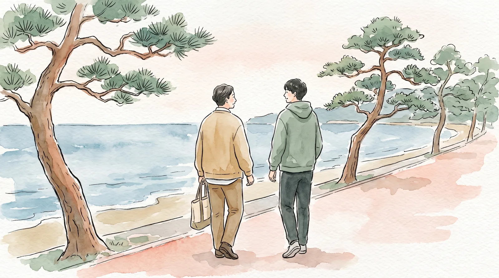
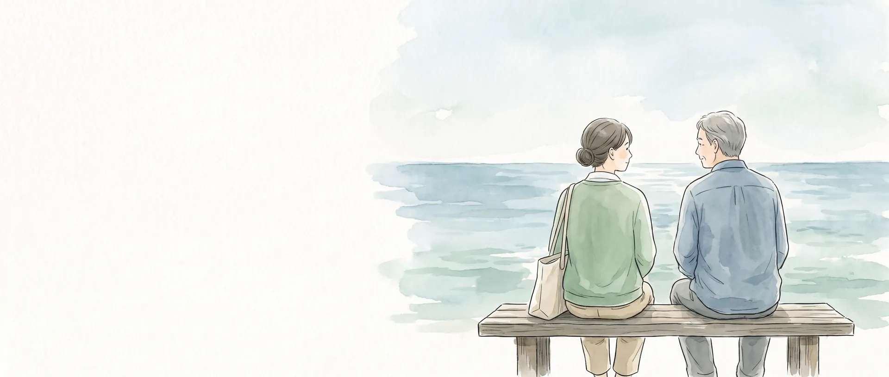
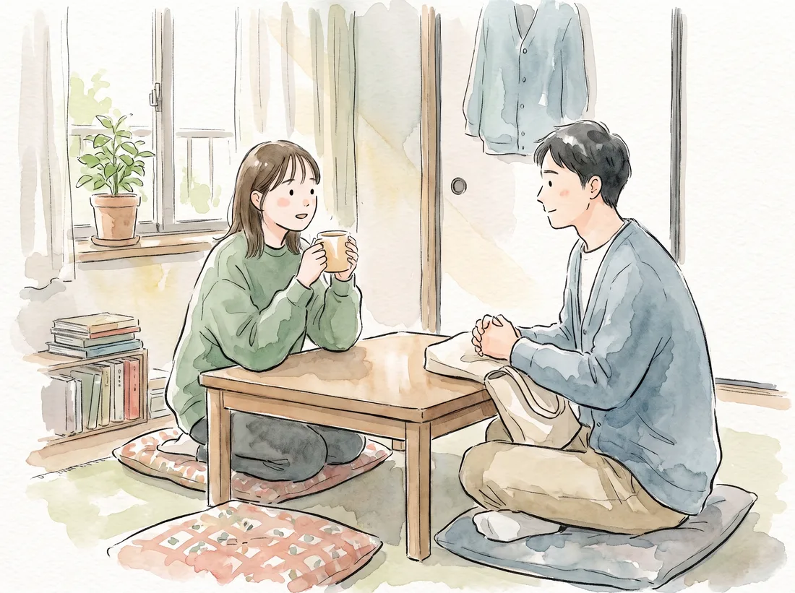
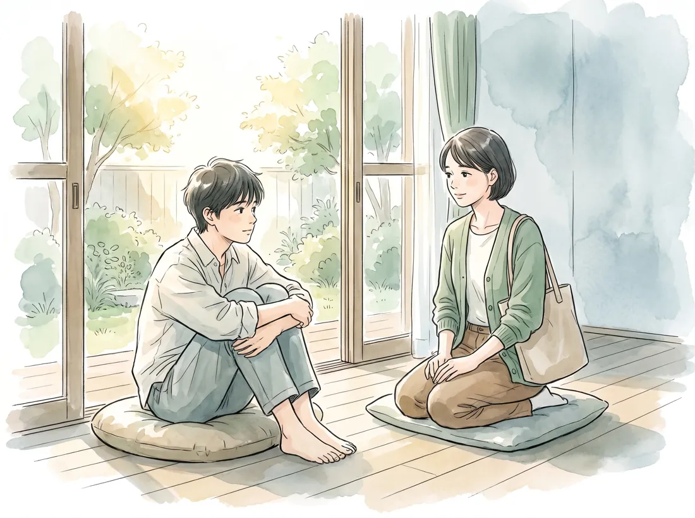
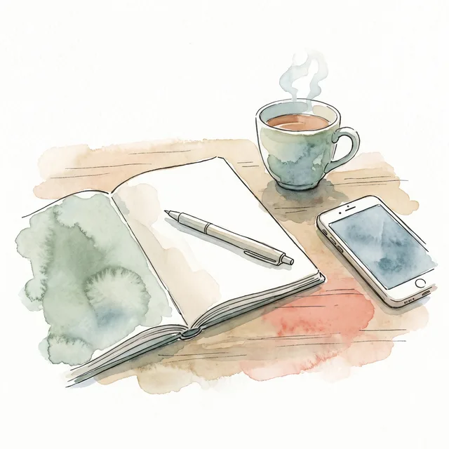
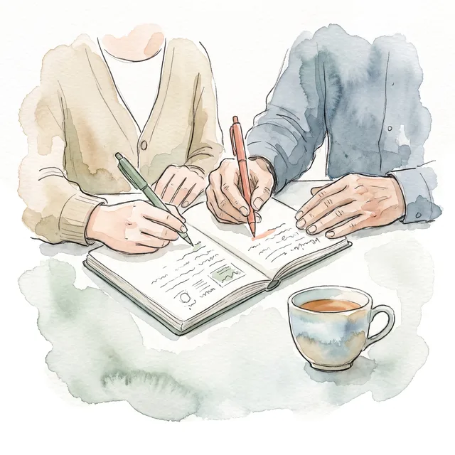
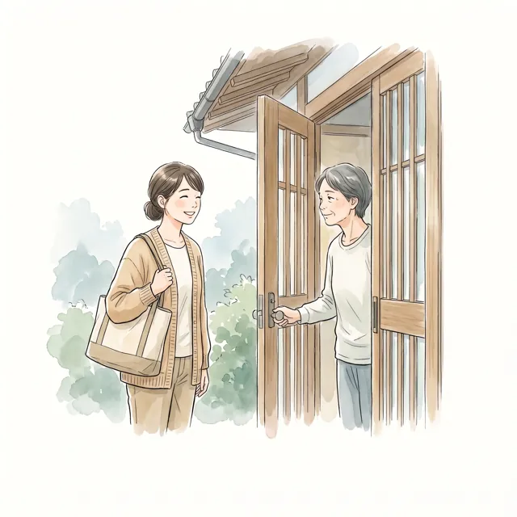
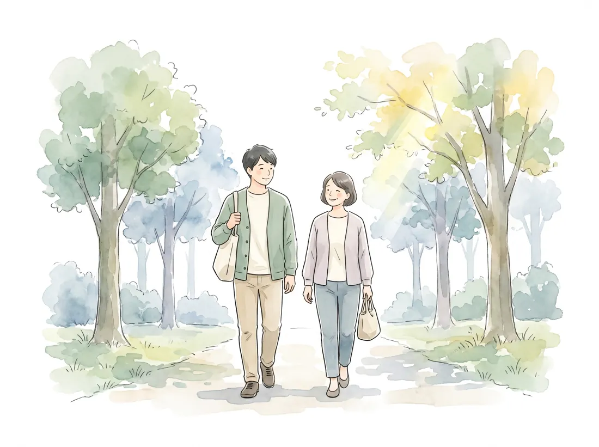
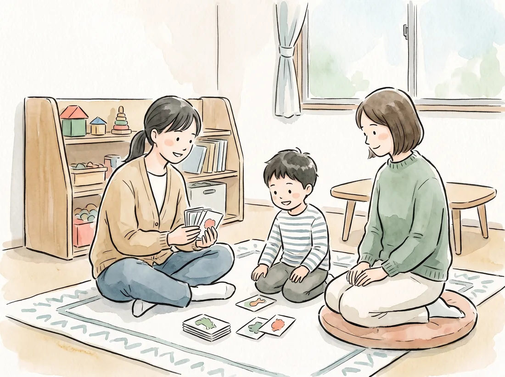
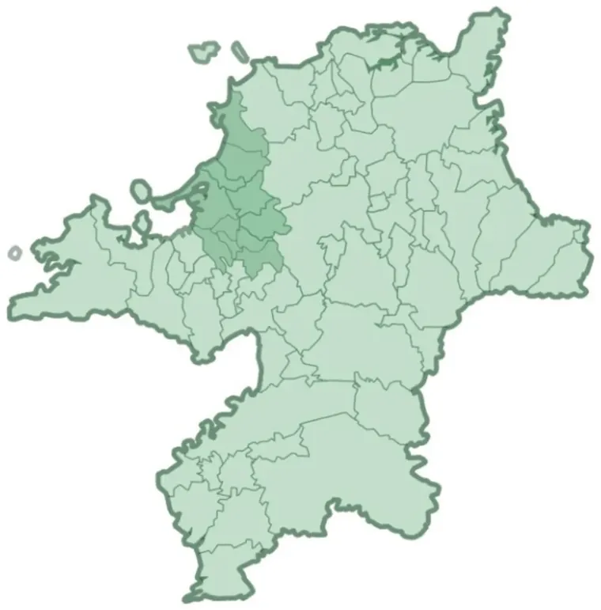

私たちが時間をかけて寄り添います

はるうたは、こころのケアが得意な訪問看護ステーションです
はるうたでは、
ご利用者・ご家族様の
お一人
このようなお悩みありませんか？
- おくすりの
管理に 不安が ある - 身の
まわりの ことが うまく できない - 生活リズムが
保てず時間を 有意義に 過ごせない - 外出が億劫になる
- まわりの
人と うまく 話せない、 トラブルに なってしまう - だれかの
視線や 音が 気に なる - 涙があふれて止まらない
- 自分を傷つけてしまう

その
周りに
自分だけでは
地域の
はるうたの基本的な考え方
ストレングスとリカバリー
ストレングスとは、
ご利用者さまが主体性をもつこと
私たち
はるうたの訪問看護

主治医との連携
主治医に

ご利用者さまとのプランニング
はるうたでは

看護師・作業療法士の定期的な訪問
看護師・作業療法士が

作業療法士による暮らしの支援
作業療法士が、

暮らしの中で、一緒に
- 外出や通院の同行支援
- 気分転換、
リラクゼーションケア（お散歩や 自宅での 足浴など） - 各機関との連携
- 必要に
応じた ご家族の サポート など

訪問看護でも、子どもの療育を受けられます
近年増加傾向に
はるうたでは
サポート対象エリア

アクセス・お問い合わせ
- 事業所名
- 訪問看護ステーション
はるうた - 運営会社
- 合同会社リンク
- 代表者
- 大久保 嘉成
- 所在地
- 〒811-0112
福岡県糟屋郡新宮町下府5丁目5-10 - 電話
- 092-410-6392
- FAX
- 092-410-6393
- 受付時間
- 9:00〜18:00
（土日祝日を 除く） - 開設日
- 2024年7月1日
- 事業所番号
- 4060490515